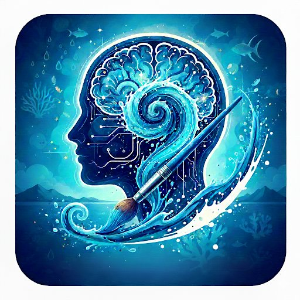

The Blue Maker → Signature Framework
It isn’t looked at. It’s walked through. And in that crossing, the body changes rhythm.

Blue Transforms
The effect of the colour blue on our brain is perhaps more significant than we might believe. It is the light of our skies, of our seas and oceans, and the hue so prevalent in the world of marketing and advertising.
Blue doesn’t only have a relaxing effect — several studies conclude it can improve our physical and psychological health. Blue represents harmony, tranquillity, courtesy and happiness; it is the colour from which the highest inspiration is born, belonging to ethereal and spiritual natures. Darker tones represent refinement and elevated thought — in the classical Arab world it was believed effective for reviving lost love. Electric blue is personal magnetism, dark blue is spirituality, and indigo is intuition and spiritual perception.
In its different shades it is read as non-threatening, relaxing and serene, which is why advertising uses it so often, to induce calm, trust and security in the user or buyer. The effect of the colour blue changes our brain stimulus, and this is reflected in the artistic field too.
It is also said that the most expensive colour of all time was ultramarine blue, made from lapis lazuli. Blue has always fascinated the artistic community for one concrete reason: the impact it has on human beings. Wassily Kandinsky, for example, used to say that the deeper the blue on a canvas, the more it invites the viewer to think of the infinite. This colour seems to provoke in us a strange longing where purity and sensitivity dwell.
Science Confirms It
Several studies support the positive impact of the colour blue on our mental and emotional health.
People who frequent natural spaces where blue light is more intense — sea, lakes, rivers — show greater mental health. Depression rates fall among those who visit these environments continuously. Sea views are associated with lower rates of depression in the elderly. Stress and anxiety levels fall significantly when we share time with loved ones in spaces where blue is present.
Our planet, the Blue Planet, holds the greatest quantity of water. Blue inhabits us.
This Project Is Born From a Question
Blue Immersion is a sensory, artistic and educational experience that connects science, nature and wellbeing to inhabit blue from the body, the environment and life.
What I feel — recognising sensations (calm, noise, speed) and exploring the colour blue.
Where I am — connecting with nature and understanding the Blue Zones.
How I inhabit — reflecting on life habits and understanding the impact of environment.
Techniques that invite deceleration: cyanotype and mixed techniques, as an imprint of light and a memory of the body.
The goal is not to “explain the exhibition”, but to: activate perception · connect with the body · understand the environment as part of health · experience slow time.